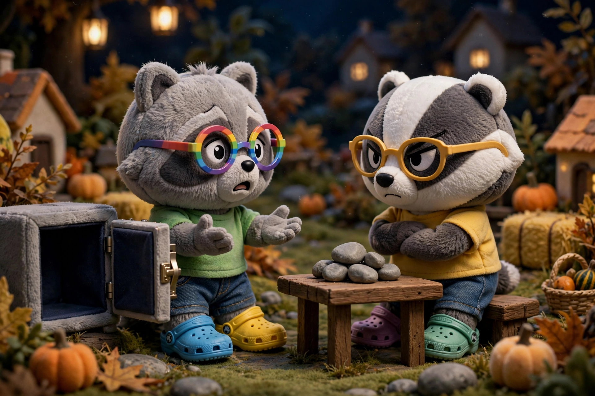
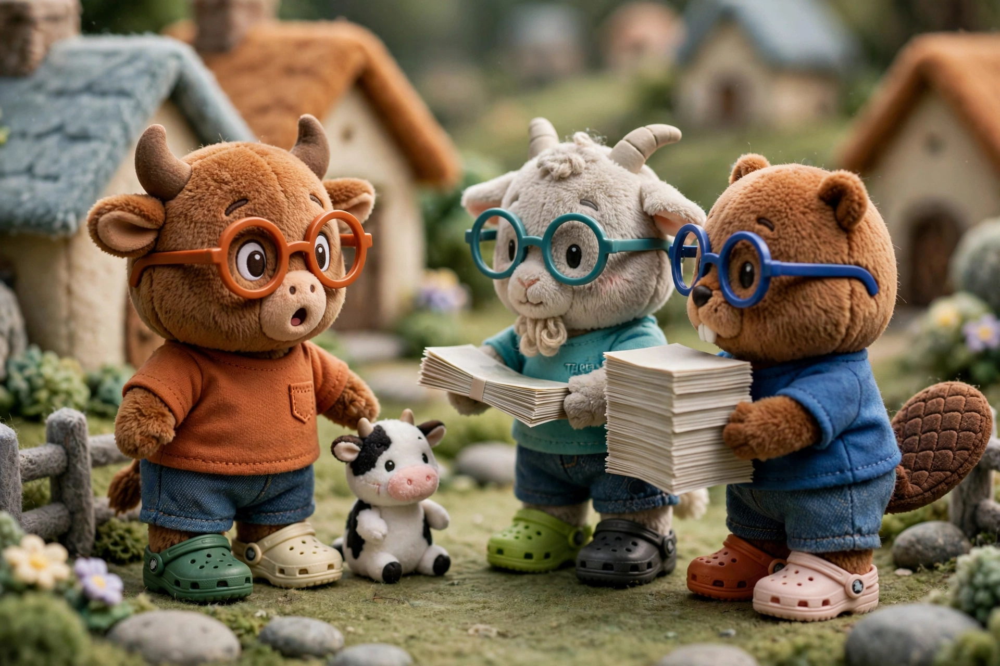
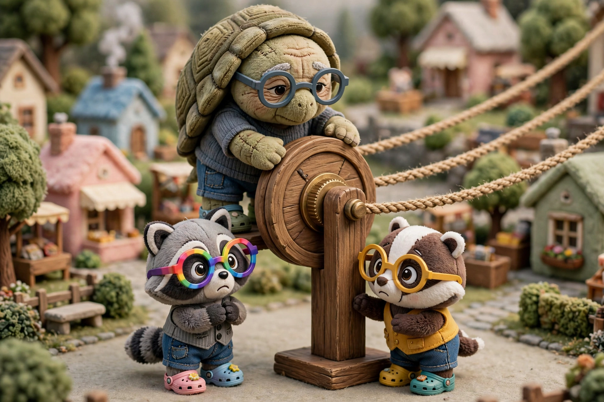

Centralization
Squeeze
Every autumn, all the farmers in town withdraw their stones from their banks to pay the field mice who bring in the harvest. These are typically poor, itinerant field mice who do not have bank accounts. They always want to be paid in stones. On a normal night, the banks’ nightly settlement is easy because everyone in the village is paying everyone else, and so the residual payments between banks is small. The zoologist pays the architect and the architect pays the bookseller and the bookseller pays the fishmonger and the fishmonger pays the zoologist. Money circulates. But around harvest time, many banks struggle to settle because their stones have been withdrawn to pay field mice. Money flows in one direction. The banks fear this night, because often the residual payments are very large. The bankers call this night a credit crunch because the ability to extend credit is restricted, as many banks are suddenly short on stones. The stones do not disappear; they simply leave the banking system temporarily, until the field mice spend their money.
Gridlock

One harvest night, the raccoon’s bank owes Poseidon Bank a large residual payment of one hundred thousand stones, but the raccoon’s vault is empty because its customers had to pay workers’ wages. As usual, the raccoon asks Poseidon for an overnight loan, but this time Poseidon says no. The raccoon argues that while its vaults are empty, this is only due to the seasonal harvest. Eventually, money will flow back into the raccoon’s bank as its customers—many of whom borrowed money to prepare for the harvest—repay their debts. But Poseidon has its own debts to pay very soon and depositers who might ask for their stones back at any moment. Also, Poseidon cannot tell whether the raccoon made good or bad loans. All Poseidon can see from the outside is that the raccoon does not have stones. Most of the other banks are similarly constrained by the harvest’s drain on their stones, and the raccoon simply cannot settle its debt. The problem with the harvest night credit crunch is that the raccoon cannot create money that Poseidon will accept. The raccoon can expand its balance sheet to create new deposits that the bookkeeper will accept as money. But these new deposits mean nothing to Poseidon. Money is something that the other party will accept as the settlement for a debt, and so deposits at the raccoon’s bank is not money to Poseidon. But if the raccoon cannot pay Poseidon, then Poseidon cannot pay Hermes, and so on. The banks cannot settle, and this harvest night, the banking system finally goes into gridlock. The bank leaders and village elders agree to meet the next morning to resolve the crisis.
Backstop
The next morning, the largest bank in the village, the badger, proposes a solution. It argues that the banks should create an organization that acts as an intermediary between lender and debtor banks during a crisis. The badger calls this a clearinghouse. The clearinghouse could inspect any member bank’s balance sheet and issue paper certificates against the bank’s assets. Other banks would trust the clearinghouse because it was a neutral third party, run by all the member banks. At first, Poseidon balks at this idea. It argues that you cannot settle a debt by making another one. This is why the raccoon cannot simply loan itself money and why Poseidon does not want another promise from another bank. But the badger argues that these certificates are not promises; they are money between banks! If two villagers transact without a bank, the only thing that is money between them is stones. But if two villagers use an intermediary such as a bank, then a hierarchy emerges. One villager can pay another using a banknote and both parties go to bed knowing that there is no debt. The debt is moved up the hierarchy, to debt between banks. But what happens when the banks cannot settle? The badger argues that the fix is simple and even obvious: the banks should move the debt up the hierarchy by creating a kind of bank-of-banks! Finally Poseidon agrees—what choice did the bank really have any way? —and a clearinghouse is created. The clearinghouse inspects the raccoon’s balance sheet and then issues a fairly-valued certificate against its assets. The raccoon pays Poseidon with this certificate, and now the raccoon has no debt to Poseidon but rather has debt to the clearinghouse. And Poseidon can pay Hermes with a clearinghouse certificate, and so on. And soon, the field mice start buying beer and food and clothing, and stone money starts flowing through the village and back into each bank’s storehouse. Soon, every bank is able to repay its certificate loan, and the banking system survives the harvest gridlock.
Centralization
Over time, the banks agree with the badger that these certificates were yet another form of money. Between villagers, stones were money and even banknotes were money because neither was any villager’s liability and both were accepted at face-value and without any discount, which the banks called at par. Similarly, between banks, clearinghouse certificates were a kind of money because they were not the liability of any individual bank and they were accepted at par. However, with time, the banks came to dislike the clearinghouse. The badger was the largest bank and even a competitor and yet had outsized influence in the process. The village elders realized that the clearinghouse, as a bank-of-banks, was the most powerful financial organization in the village. So the village elders stepped in and decided that the village needed an official bank-of-banks, which they called the central bank. They called all the other banks commercial banks. The central bank would serve essentially the same role as the clearinghouse, but rather than being run by member banks, it would be a new administrative arm of the village government.
Reserves
The central bank opened a bank account for every bank in the village. Unlike the clearinghouse, banks had no choice. They could not opt in or out of membership. They were required by law. And rather than issue certificates, the central bank said it would issue reserves. The central bank said that certificates were ad hoc emergency money, issued as part of a voluntary system of member banks, while reserves would be official bank money, issued by the central bank. Furthermore, by law every bank had to keep a certain amount of reserves in its account at the central bank, as a fraction of the amount of deposits it owed its customers. This made reserves money between banks, because now banks needed and wanted to have reserves and because they were accepted at par as settlement for debt between banks. To get more reserves, a commercial bank would borrow from the central bank against the assets on its balance sheet. This moved bank debt up the financial hierarchy, just as villager debt was moved up the hierarchy by banks. And just as villager debt was made flexible by intermediation and money creation, so bank debt was made flexible by the central bank, which could simply create reserves by expanding its balance sheet.
Inflation

Over time, debt in the village grew. The commercial banks were comfortable with the debt in the village, because now they could always settle their debts to other banks by going into debt to the central bank instead. And the central bank was comfortable with all the debt from commercial banks, because it could always expand its own balance sheet to create more reserves. However, as more and more villagers and businesses paid for goods with debt, the price of goods in the village went up. For example, the bull could only raise so many cows per year, but now people were offering him more stones for each cow. So the prices of cows went up. And so on for other items in the village. The villagers called this increase in prices over time inflation. The villagers speculated that inflation was caused by the village creating money faster than it could create value. A few wise villagers noticed, however, that the problem with inflation was not with stones. The stone supply had barely changed in years. When the village experienced inflation years ago, it was when the flood cut open the river embankment and revealed more special stones. At that time, the impact was moderated because the value of a day’s labor collecting stones was reduced as the value of a stone went down. But now inflation was being caused by the stroke of a banker’s pen, and this labor was essentially free.
Policy

The central bankers thought about the problem of inflation, and they realized that they could control the price and thus the quantity of reserves, which in turn would control the price of money for the villagers. Just as a commercial bank could encourage more villagers to deposit money by offering a higher interest rate on deposits, so the central bank could encourage more banks to hold reserves by offering a higher interest rate on reserves. And since banks were were required to hold reserves as a fraction of the debts on their balance sheet, this meant that the banks would loan less money to villagers. So if the central bank increased the interest rate it offered on reserves, more banks would hold reserves and thus decrease their lending to villagers. And if the central bank decreased the interest rate it offered on reserves, fewer banks would deposit their reserves and thus increase their lending to villagers. So the central bank started to manage the problem of inflation by changing the overnight interest rate on reserves.
Hierarchy
The villagers have constructed a hierachy of money. Villagers settle debts with stones, bank deposits, or banknotes, while banks settle debts with reserves. So reserves are money between banks, while banknotes and deposits are money between villagers. This gave the central bank enormous power. It could change the price of credit throughout the entire village by changing the interest rate on reserves. And in a crisis, it could act as the lender of last resort, creating elasticity in the system by lending when no other bank could. The villagers have built a hierarchical system that allows for both elasticity and discipline in the money supply.